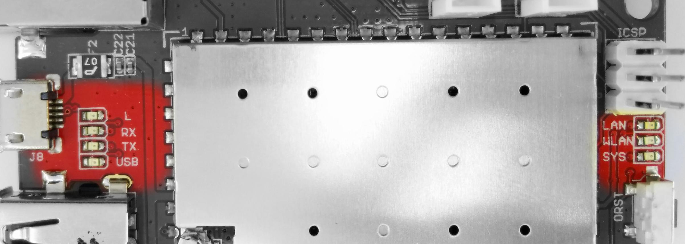
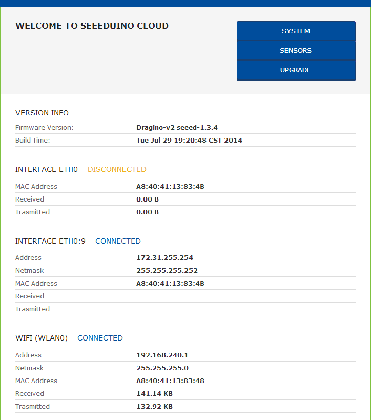
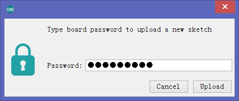

Seeeduino Cloud is a microcontroller board based on Dragino WiFi IoT module HE and ATmega32u4. HE is a high performance, low cost 150M, 2.4G WiFi module which with an Open Source OpenWrt system inside. HE means “core” in Chinese. Seeeduino Cloud is also an Arduino compatible board, 100% compatible with Grove, Shield and IDE(Arduino IDE 1.5.3 and later). Apart from normal interface of Arduino, Seeeduino Cloud has built-in Ethernet and WiFi support. A USB-A port makes it very suitable for those prototype designs that need network connection and mass storage. It is also a good idea to use Seeeduino Cloud as an IoT gateway.

1. HE Module
| Parameter | Value |
|---|---|
| CPU | ATHEROS AR9331 |
| Clock Speed | 400MHz |
| RAM | 64MB |
| Flash | 16MB |
| OS | Open Source OpenWrt |
| Interfaces | 2 x RJ45, 1 x USB Host, 1 x UART, 14 multiplex GPIOs |
| Power | 3.3V power input |
| WiFi | Support 150M 2.4Ghz WiFi, 802.11 b/g/n |
2. AVR Arduino Microcontroller
| Parameter | Value |
|---|---|
| Microcontroller | ATmega32u4 |
| Flash Memory | 32KB |
| SRAM | 2.5kB |
| EEPROM | 1kB |
| Clock Speed | 16MHz |
| Digital I/O Pins | 20 |
| PWM Channels | 7 |
| Analog Input Channels | 12 |
POWER —— The Dragino HE is the core module of Seeeduino Cloud and it requires around 200mA current when in full load. It is recommended to power the board via the micro-USB connection with 5V DC. If you are powering the board though the Vin pin, you must supply a regulated 5V DC.
NOTE: There is no on-board voltage regulator for connecting higher DC voltages. Applying more than 5V will damage the board.
Memory —— The ATmega32u4 has 32 KB (with 4 KB used for the bootloader). It also has 2.5 kB of SRAM and 1 kB of EEPROM (which can be read and written with the EEPROM library).
The Dragino HE has 64 MB of DDR2 RAM and 16 MB of flash memory.
LEDs —— Seeeduino Cloud has 7 Leds, as shown in the picture below.

Reset Button —— Seeeduino Cloud has 3 Reset buttons, as shown in the picture above.
Seeeduino Cloud is compatible with Arduino Yun. Hence, you can get started with Arduino Yun Guide. Here, we provide some basic operations to know more about Seeeduino Cloud. At last, you need a notebook to get started.
The Seeeduino Cloud has a WiFi interface and a LAN port. Either of them has IP address that can be used for internet connection and device management.
When you power ON the Seeeduino Cloud for the first time, there will be an unsecure WiFi network called SeeeduinoCloud-AXXXX shown in wifi connections.
You can connect your computer to this network as shown below. Your computer will get an ip of this network 192.168.240.xxx. The Seeeduino Cloud has a default ip address of 192.168.240.1.
The Seeeduino Cloud runs an Open Source Linux system. If user has a computer in the same network as Seeeduino Cloud, user can access its system via either Web Interface or Secure Shell(SSH).
Once you have obtained an IP address, open a web browser, and enter 192.168.240.1 into the browser, you can see the Seeeduino Cloud WEB GUI web page.
The default password is seeeduino, enter the password and click LOG IN.
Via SSH access, user can access the Linux system directly and customize the system to support more features and applications. To access, you need to
Note that always disable your Ethernet adapter before use fallback IP address to access Linux OS inside. Although you can keep connected after enabling Ethernet adapter later.
username: root password: seeeduino
Once logged in, you can see the welcome page as follows.
After logging in via Web, the GUI will show you the WiFi/ Eth interface status. At the top-right corner, you can see the following three option settings:

1. Click the SYSTEM on Seeeduino Cloud homepage and enter the system configuration page.
2. In WIRELESS PARAMETERS field, you can select a wifi network that you wish to connect to.
3. Select the security type and then enter the password.
4. Press the CONFIGURE & RESTART button, the Seeeduino Cloud will reset the network configuration and join the specified network.
Now, you can join the network that you assigned to the Seeeduino Cloud.
Note that now you can not connect Seeeduino Cloud with fallback IP 172.31.255.254 or 192.168.240.1 over SSH.
The IoT Server page allows you to upload data to IoT websites such as Xively while you only need to write sensor data to serial port.
and the sketch is shown below.
/* Simulate UART TX Data This sketch simulate Temperature and Humidity data to UART. To test the pass through feature for different IoT service created 25 Apr 2014 by Dragino Technology Co., Limited Reference: http://wiki.dragino.com/index.php?title=Xively#Upload_data_to_Xively_use_Pass_Through_Mode */ String dataString = ""; void setup() { Serial1.begin(115200); } void loop() { dataString = "temp:"; dataString += random(10) + 20; Serial1.println(dataString); // upload Temperature data delay(20000); dataString = "humidity:"; dataString += random(5) + 70; // upload humidity data Serial1.println(dataString); delay(20000); }
For more information, please visit the wiki for Dragino.
Seeeduino Cloud can be upgraded via the GUI or SSH for bug fixes/system improvement or new features.
Go to GUI->Upgrade page and select the correct firmware to upgrade. The firmware used for web upgrade should be a sysupgrade type firmware, you can choose to keep settings or not after upgrade.
Normally it takes a few minutes to flash the new firmware. Then all the LEDs will blink together which indicates that the system reboot with the new firmware.
The firmware version info can be checked from here.
To upgrade via SSH, follow the steps below:
root@Seeed:/# mount -t vfat /dev/sda1 /mnt/sda1
root@Seeed:/usr/bin# run-sysupgade /mnt/sda1/seeed-v1.3.4-squashfs-sysupgrade.bin
There are some cases in which the Seeeduino Cloud fails to boot, for example if upgraded with an improper firmware or due to power failure during upgrade.
User is still able to recover the Seeeduino Cloud system by using the Failsafe U-Boot of Seeeduino Cloud.
Follow the instructions (in Windows) given below:
Download the tftp server (recommend tftp32d.exe). And download the latest SeeeduinoCloud firmware . The firmware we need is the kernel and rootfs-squashfs files. Put these firmware files and tftp32d in the same directory. Start the tftp server.
Download Hercules, the tool to transfer commands to Seeeduino Cloud in Failsafe mode. Run Hercules and input correct parameters as shown below:
Protocol: UDP
Module IP: 192.168.255.1
Port: 6666
Local port: 6666
Connect the PC and Seeeduino Cloud via an Ethernet cable. Set up PC with below LAN IP 192.168.255.2 and netmask 255.255.255.0 . Disable PC’s firewall.
Press the Failsafe button (press the Cloud Rest and System Rest button at the same time for at least 3s) and power up Seeeduino Cloud; User will see all the LEDs blink together, release the button after 10 seconds and there are some messages that pop up in the Hercules panel, which means the Seeeduino Cloud has been in Failsafe Netconsole mode and ready to access commands.
User can type the commands in Hercules to transfer and upgrade Yun Shield to the latest firmware with factory settings.
The update commands are as follows, replace the xxx with the actual version.
Note: While typing the command in Hercules, the user must add <CR> at the end of each command; $ is a special char in Hercules, user should double it (key two $$) while typing.
Upgrade Kernel
tftpboot 0x81000000 ms14-arduino-yun-kernel-xxx.bin erase 0x9fea0000 +0x140000 cp.b 0x81000000 0x9fea0000 $filesize
Upgrade rootfs
tftpboot 0x81000000 ms14-arduino-yun--rootfs-squashfs-xxx.bin erase 0x9f050000 +0xe50000 cp.b 0x81000000 0x9f050000 $filesize
Reset to the new firmware
reset
Warning: User should use the exact address shown in the erase and cp.b. Wrong address number may destroy the boot-loader of Yun Shield and the device won’t boot anymore, or destroy the radio data of Yun Shield which may lead to a poor wifi performance or incorrect MAC addresses.
Recovery in Linux is similar to Windows, the main difference is that the tool used in Linux is nc and the command is with nc -kul 6666. It shows if the Yun Shield has been in Failsafe Netconsole mode and detected by nc.
Seeeduino Cloud allows you to upload sketch via common COM port or network. If you choose the latter, your computer and Seeeduino Cloud should be in the same network. The Seeeduino Cloud will broadcast data in the network and Arduino IDE will receive the data and show the Seeeduino Cloud in Tools->Port.

The Bridge Library simplifies the communication between the Arduino Board and Dragino HE. Bridge commands from the AVR (Arduino Board) are interpreted by Python on the HE.
Its role is to
- execute programs on the GNU/Linux side when asked by Arduino,
- provide a shared storage space for sharing data like sensor readings between the Arduino and the Internet
- receive commands from the Internet and pass them directly to the Arduino.
There are detailed explanations and lots of examples to show how to use Bridge on the Arduino Official Website.
Following are some examples that use Bridge Library.
Introduction:
This example is a hello test between the Arduino and Seeeduino Cloud. The example can be found on
the Arduino IDE--> File --> Examples --> Bridge --> ConsoleRead. A tutorial of this example can be
found here. You can see the code below with some additional details
to understand it with the Seeeduino Cloud:
Code:
#include <Console.h> String name; void setup() { // Initialize Console and wait for port to open: Bridge.begin(); Console.begin(); // Wait for Console port to connect while (!Console); Console.println("Hi, what's your name?"); } void loop() { if (Console.available() > 0) { char c = Console.read(); // read the next char received // look for the newline character, this is the last character in the string if (c == '\n') { //print text with the name received Console.print("Hi "); Console.print(name); Console.println("! Nice to meet you!"); Console.println(); // Ask again for name and clear the old name Console.println("Hi, what's your name?"); name = ""; // clear the name string } else { // if the buffer is empty Cosole.read() returns -1 name += c; // append the read char from Console to the name string } } }
Introduction:
This example shows how to log data to the public IoT server “Xively”. The example is a modified
version (change Serial to Console to fit for different Arduino Board and debug over WiFi) from
Arduino IDE--> File --> Examples --> Bridge --> XivelyClient. Tutorial of this example can be referred here.
Before uploading the sketch, make sure:
- The Seeeduino Cloud already has internet access.
- Input your FEED ID and API KEY according to the Tutorial. Note, The FEED ID should be
within double quotation marks “” .
Code:
/* Xively sensor client with Strings This sketch connects an analog sensor to Xively, using an Arduino Yún. created 15 March 2010 updated 27 May 2013 by Tom Igoe http://arduino.cc/en/Tutorial/YunXivelyClient */ // include all Libraries needed: #include <Process.h> #include "passwords.h" // contains my passwords, see below /* NOTE: passwords.h is not included with this repo because it contains my passwords. You need to create it for your own version of this application. To do so, make a new tab in Arduino, call it passwords.h, and include the following variables and constants: #define APIKEY "foo" // replace your pachube api key here #define FEEDID 0000 // replace your feed ID #define USERAGENT "my-project" // user agent is the project name */ // set up net client info: const unsigned long postingInterval = 60000; //delay between updates to xively.com unsigned long lastRequest = 0; // when you last made a request String dataString = ""; void setup() { // start serial port: Bridge.begin(); Serial.begin(9600); while (!Serial); // wait for Network Serial to open Serial.println("Xively client"); // Do a first update immediately updateData(); sendData(); lastRequest = millis(); } void loop() { // get a timestamp so you can calculate reading and sending intervals: long now = millis(); // if the sending interval has passed since your // last connection, then connect again and send data: if (now - lastRequest >= postingInterval) { updateData(); sendData(); lastRequest = now; } } void updateData() { // convert the readings to a String to send it: dataString = "Temperature,"; dataString += random(10) + 20; // add pressure: dataString += "\nPressure,"; dataString += random(5) + 100; } // this method makes a HTTP connection to the server: void sendData() { // form the string for the API header parameter: String apiString = "X-ApiKey: "; apiString += APIKEY; // form the string for the URL parameter: String url = "https://api.xively.com/v2/feeds/"; url += FEEDID; url += ".csv"; // Send the HTTP PUT request // Is better to declare the Process here, so when the // sendData function finishes the resources are immediately // released. Declaring it global works too, BTW. Process xively; Serial.print("\n\nSending data... "); xively.begin("curl"); xively.addParameter("-k"); xively.addParameter("--request"); xively.addParameter("PUT"); xively.addParameter("--data"); xively.addParameter(dataString); xively.addParameter("--header"); xively.addParameter(apiString); xively.addParameter(url); xively.run(); Serial.println("done!"); // If there's incoming data from the net connection, // send it out the Serial: while (xively.available() > 0) { char c = xively.read(); Serial.write(c); } }
Introduction:
This example shows how to log data to a USB flash. The sketch used in this example is same as
here. And the source code can be found there.
The Seeeduino Cloud will auto mount the USB flash to directory /mnt/sda1. And the sketch will append
the sensor data to the file /mnt/sda1/data/datalog.csv. So make sure there is such a file in the USB
flash before running the sketch.
Code:
#include <FileIO.h> //FileIO class allow user to operate Linux file system #include <Console.h> //Console class provide the interactive between IDE and Yun Shield void setup() { // Initialize the Console Bridge.begin(); Console.begin(); FileSystem.begin(); while(!Console); // wait for Serial port to connect. Console.println("Filesystem datalogger\n"); } void loop () { // make a string that start with a timestamp for assembling the data to log: String dataString; dataString += getTimeStamp(); dataString += " , "; // read three sensors and append to the string: for (int analogPin = 0; analogPin < 3; analogPin++) { int sensor = analogRead(analogPin); dataString += String(sensor); if (analogPin < 2) { dataString += ","; // separate the values with a comma } } // open the file. note that only one file can be open at a time, // so you have to close this one before opening another. // The USB flash card is mounted at "/mnt/sda1" by default File dataFile = FileSystem.open("/mnt/sda1/data/datalog.csv", FILE_APPEND); // if the file is available, write to it: if (dataFile) { dataFile.println(dataString); dataFile.close(); // print to the serial port too: Console.println(dataString); } // if the file isn't open, pop up an error: else { Console.println("error opening datalog.csv"); } delay(15000); //Write every 15 seconds } // getTimeStamp function return a string with the time stamp // Yun Shield will call the Linux "date" command and get the time stamp String getTimeStamp() { String result; Process time; // date is a command line utility to get the date and the time // in different formats depending on the additional parameter time.begin("date"); time.addParameter("+%D-%T"); // parameters: D for the complete date mm/dd/yy // T for the time hh:mm:ss time.run(); // run the command // read the output of the command while(time.available()>0) { char c = time.read(); if(c != '\n') result += c; } return result; }
If the bootloader of Seeeduino Cloud has broken, you can re-burn the bootloader like this:
root@Seeed:~# /usr/bin/run-avrdude Caterina-Yun.hex
and you will see the following message that shows bootloader has been burned successfully.
root@Seeed:~# /usr/bin/run-avrdude Caterina-Yun.hex
avrdude: AVR device initialized and ready to accept instructions
Reading | ################################################## | 100% 0.01s
avrdude: Device signature = 0x1e9587
avrdude: NOTE: "flash" memory has been specified, an erase cycle will be performed
To disable this feature, specify the -D option.
avrdude: erasing chip
avrdude: reading input file "0xFF"
avrdude: writing lfuse (1 bytes):
Writing | ################################################## | 100% 0.00s
avrdude: 1 bytes of lfuse written
avrdude: verifying lfuse memory against 0xFF:
avrdude: load data lfuse data from input file 0xFF:
avrdude: input file 0xFF contains 1 bytes
avrdude: reading on-chip lfuse data:
Reading | ################################################## | 100% 0.00s
avrdude: verifying ...
avrdude: 1 bytes of lfuse verified
avrdude: reading input file "0xD8"
avrdude: writing hfuse (1 bytes):
Writing | ################################################## | 100% 0.00s
avrdude: 1 bytes of hfuse written
avrdude: verifying hfuse memory against 0xD8:
avrdude: load data hfuse data from input file 0xD8:
avrdude: input file 0xD8 contains 1 bytes
avrdude: reading on-chip hfuse data:
Reading | ################################################## | 100% 0.00s
avrdude: verifying ...
avrdude: 1 bytes of hfuse verified
avrdude: reading input file "0xCB"
avrdude: writing efuse (1 bytes):
Writing | ################################################## | 100% 0.00s
avrdude: 1 bytes of efuse written
avrdude: verifying efuse memory against 0xCB:
avrdude: load data efuse data from input file 0xCB:
avrdude: input file 0xCB contains 1 bytes
avrdude: reading on-chip efuse data:
Reading | ################################################## | 100% 0.00s
avrdude: verifying ...
avrdude: 1 bytes of efuse verified
avrdude: reading input file "Caterina-Yun.hex"
avrdude: can't open input file Caterina-Yun.hex: No such file or directory
avrdude: read from file 'Caterina-Yun.hex' failed
avrdude: safemode: Fuses OK
avrdude done. Thank you.Seeeduino Cloud has a linux system based on OpenWrt, you can view all the source code from here. To customize your own OpenWrt, you can follow this URL.